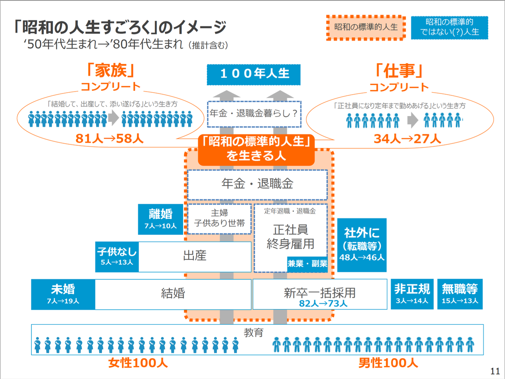
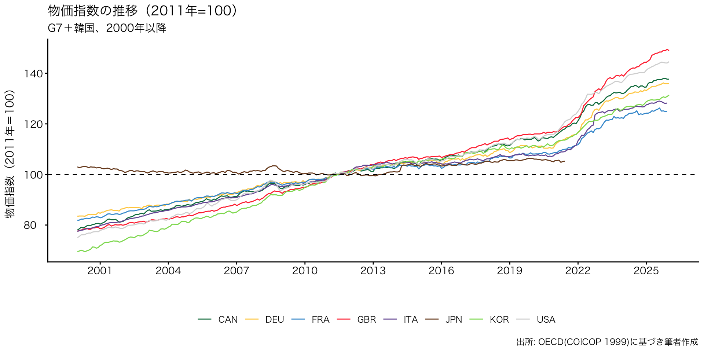
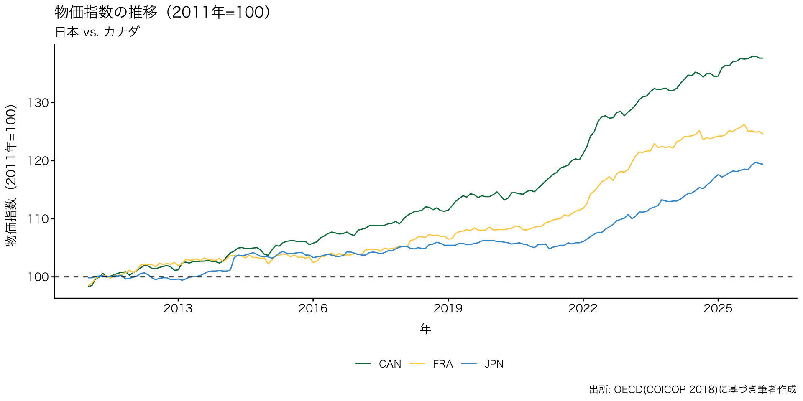
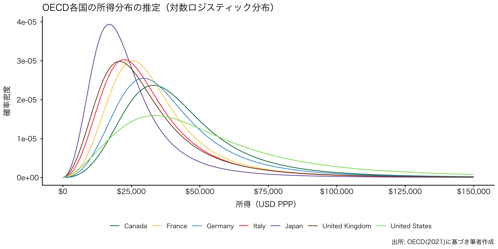

![]()
| 類型 | 学歴 | 給与 | 世帯所得 | 居住地 | 政治的発言力 | コミュニティ帰属 | 推定比率 |
|---|---|---|---|---|---|---|---|
| 大企業型 | 高い | 高い | 高い | 都会 | 中間 | 低い | 26 |
| 地元型 | 低い | 低い | 高い | 地方 | 高い | 高い | 36 |
| 残余型 | 多様 | 低い | 低い | 都会 | 低い | 低い | 38 |
政治学概論Ⅰ《2025》
#2 福祉国家と現代日本の課題
December 17, 2025
KEYWORDS
- こたつ記事；小熊モデル；福祉国家；福祉政策；エスピン＝アンデルセンモデル
Ⅰ. 前回の振り返り（授業の感想）
授業の感想
政治参加の参加動機を集団行為論からまとめている箇所
政治参加や投票率が低いことは悪だという風に社会全体で言われている中、自分もなぜ政治の状況になっているのかは気にしたことがなかった。しかし、集団行為論の「個人が行動しても成果を独占できないため、参加動機が弱くなりやすい」と指摘している点がとても腑に落ち、自分の意思決定が結果に必ずしも反映されないという点は政治参加の動機として大きく作用する重要な点だと思ったから（大石さん）。
- 朝日新聞電子版「松江城天守より高いマンション「景観損なう」 一部の解体求め提訴へ」（2025年12月4日）
授業の感想
政治学を教えるにあたって、学習指導要領や教科書をただ伝えるのではなく政治学を学ぶ意義を教員自身が理解しなぜこの現象が発生しているのかや理想と現実の開きといった問いにも問いにも踏み込んでいく必要があると考えた。また「恵まれた環境で恵まれた人がいるし、そうじゃない人もいるよねで終わってしまうなら政治学はいらない」という指摘が面白いと感じた。
政治学はなぜその現象が発生するかなど、社会の構造的なところから問い直していくものであり、教科書の内容をこなすだけでは建前や原則論にとどまってしまい、結局は理想であるのではと錯覚してしまう可能性がある。また現在の政治制度に対する批判的視点や課題の発見も難しくなってしまう。また「恵まれた人もいればそうでない人もいる」で世の中が解決するならば不平等をなくすための制度や法律は不要になり政治そのものはいらなくなるという指摘に納得したから（小野さん）。
授業の感想
公民 公共 政治学教育に問題があるのでは
これは社会科教育の問題点であり重要な点だと思う。だと思う。つまり、今の社会科は変わりつつはあるけど、目的が教科書の太字の暗記で終わっているのではないかと思う。前任の社会科教育学の先生はそこを変えようとしておられて、探究的な授業、生徒が主体的に考え意見を持てる授業を作るように口酸っぱく言われていた。なので、社会科授業を教える•教えようとしている身として、暗記や指導要領をこなす、入試のための社会科ではなく、生徒が主体的に考え、議論できるような社会科を目指す必要があると考える（片山さん）。
授業の感想
「公民」/「公共」/「政治学」教育に問題があるのではないかという点で、直接的な責任と間接的な責任の二つが重要だと感じました。
自分が一年前に受けていた特に疑問を抱かずに当たり前だと受けてきた学習内容に関する点での中学・高校教育の責任と、教育学部生として自分が受けている教員を養成する大学の責任の二つが、去年まで高校生だった自分と今の自分とでかなり身近な責任の問題だと感じたから。「推し活」というような形での政治への興味の持ち方や、最近では表現が正しいかはわかりませんが小泉さんを持ち上げるようなSNSの投稿を見ました。自分の政治の見方は適当なのか見直してみようと考えました（河田さん）。
授業の感想
高校の社会科授業が面白くない
この前、自分の母校の高校に母校体験活動という実習のような形でいって授業を見たが、ただ教科書やノートに書いてある情報を教えるだけで面白くなかった。先生が動画の中でおっしゃられているように、それがなぜ問題とされているのかというように、なぜの部分を全く考えておらず事実だけを学び、自分で調べたりしていないというところが面白くない要因であると感じた（喜多川さん）。
授業の感想
学校における政治的中立性について教師の中にはそれが政治的意見をもたないと捉える人がいるという点。
教師は政治についてあまり言及しないということは知っていたが、総務省には政治教育に配慮した記述があるということは初めて知った。政治的中立性と政治的意見を持たないことと同義である傾向について、実際私の高校では各政党の政策はおろか選挙や政治の動向でさえも学ぶ機会はほとんどなかったように思う。しかし、政治が私たちの生活と密接に結びついていることを考えるとある程度教師の考えを表明することは重要で、子どもたちも政治について考えるきっかけになる（前田さん）。
Ⅱ. 初回アンケート
初回アンケート > アンケート回答率
- 対象者：政治学概論I（2025年度）受講生
- 実施方法：Googleフォーム

初回アンケート > 希望進路
- Q3. 希望の校種を教えてください（複数選択可）

初回アンケート > 希望進路
- Q4. 希望の専門教科を教えてください（複数選択可）

- 5%未満（=1名）のラベルは表示していない
初回アンケート > 希望進路
- Q5. この授業を受講した理由は何ですか？（複数選択可）

- 5%未満（=1名）のラベルは表示していない
初回アンケート > ニュース
- Q9. 政治・経済に関するニュース、情報をどこから得ていますか？

初回アンケート > ニュース
- Q9. 政治・経済に関するニュース、情報をどこから得ていますか？
初回アンケート > ニュース
- Q9. 政治・経済に関するニュース、情報をどこから得ていますか？

初回アンケート > ニュース
- Q9. 政治・経済に関するニュース、情報をどこから得ていますか？

初回アンケート > ニュース
- Q9. 政治・経済に関するニュース、情報をどこから得ていますか？

初回アンケート > ニュース
- Q9. 政治・経済に関するニュース、情報をどこから得ていますか？

初回アンケート > ニュース
- Q9. 政治・経済に関するニュース、情報をどこから得ていますか？

初回アンケート > ニュース
- Q10. 「こたつ記事」という言葉を聞いたことがありますか？

初回アンケート > 探究学習
- Q11. 探究学習は好きでしたか？

初回アンケート > 探究学習
- Q12. 探究学習のテーマは、進路ややりたいことにつながっていますか？

こたつ記事 > 例と定義
こたつ記事の例
こたつ記事の定義
こたつ記事とはテレビ番組での芸能人やコメンテーターなどの発言をそのまま引用して伝える記事だ。中には著名人のSNSやブログからコピペしただけのように見えるものもある。取材をせず、こたつの中に入ったままで書けるから、そう呼ばれている（プチ鹿島）1。
- 出典：プチ鹿島「スポーツ新聞が量産する「コタツ記事」書き手の正体は…？ “本当の問題点”を考える」（文春オンライン）
こたつ記事 > 仕組み
Yahooニュースの儲かる仕組み
- Yahooニュース：人々の興味をお金に変える
- pv（＝閲覧回数）を随時集計。広告料をpvに応じて掲載料として分配
- pv > ニュースバリュー（紙の新聞ともっとも異なる点）
- Yahooトピックス：編集部30人が話し合って選択（8本/8500本）
- Yahooトピックスより下の段（タイムライン）：閲覧者によって異なる（アルゴリズム）
こたつ記事 > 仕組み
Yahooニュースの儲かる仕組み
- タイムライン
- 「〇〇が〇〇で仰天発言！」などの釣り見出し
- 芸能またはスポーツ記事が2から4は入る
- 数打てば当たるの精神で運営。とにかくコストをかけたくない（テレビ、ネットの内容をただまとめるだけなら低コスト）（取材をしていないので、誤報の可能性がある＝ジャーナリズム倫理に反する）
- スポーツ紙は専属記者がこたつ記事を書く
- 一般紙はこたつ記事はNGとするが、系列スポーツ紙には推奨
- 毎日新聞の社員がこたつ記事を執筆して問題に（2024年11月7日、リンク）
- 炎上するネタの方がpvを稼げる
- 政治的極論は、左右を問わず、左右の両側からpvを稼げる
こたつ記事 > メディアの政治スタンス
タイムラインに上がりやすいメディアの政治スタンス
こたつ記事 > メディアの政治スタンス
こたつ記事の構造
- メディア：新聞、雑誌の売り上げが急激に減少
- 賃貸収入のある読売新聞、朝日新聞、固定客のいる日経新聞以外、存続不可能な購読者数に
- 閲覧者：ニュースは無料で手に入る（程度のもので十分）という意識
- 脆弱な収益構造のため、早晩（2030年頃？）、信頼できるメディアは崩壊する
こたつ記事 > 図1. 新聞発行部数

こたつ記事 > 図2. 1世帯当たり新聞発行部数

Ⅲ. 今週のイチオシ記事
今週のイチオシ記事
- 読売新聞「［再考 デジタル教育］山積する課題（中）「安い」教科書 存続岐路」（2025年12月5日）
- Yahooニュースには掲載されない
- オールドメディアwwwは正しい？
Ⅳ. 「不安な個人、立ちすくむ国家」をめぐって」
「不安な個人、立ちすくむ国家」と「めぐって」
不安な個人、立ちすくむ国家
スタジオジブリ 小冊子『熱風』
- 小冊子『熱風』
- 「鈴木敏夫のジブリ汗まみれ」
リーディングアサインメント
p.11の「つまり、あなたがたのリアリティから出発しているためのバイアスが根本的な問題なのです。」という部分が重要だと思った。
自分の置かれた立場から述べられた話は、バイアスがかかっていることが前提として考えなければ、その話の対象とはならない存在からすればおかしいなと感じる部分になるのだと考えなければならないのだということを特に感じさせられたから。また、バイアスがかかっていることを自身がレポートを書くときにいつでも意識することができる人はどれほどいるのか疑問に思ったことも理由としてある（河田さん）。
リーディングアサインメント
「昭和の人生すごろく」13頁
正社員になって定年まで勤めあげる生き方をしているのが1950年代生まれで34％しかいないというのが面白いと感じた。当時は一つの道を究めることが至上という風潮だったのではないかと考えていて、本文にも「正社員のお父さんは、終身雇用で一生クビにならない」とあるにもかかわらず、実際に勤めあげる人が少ないというのが意外だった（小松原さん）。
リーディングアサインメント
「トータルピクチャーを理解するには、勉強をして自分の持つバイアスを相対化しなければならない。」（12ページ）という考えが重要だと思った
自分自身がバイアスを持っているという自覚をしっかり持つことは、政治を考える上でも、教員という職業においても重要だと感じたから。この記事を読みながら、私は大学進学が可能であることを当然とする家庭環境を持つ友人に囲まれて学生生活を送ってきたという事実を強く実感した。政策がどのような生活環境を想定してつくられているのかを考えることは、教員が生徒一人ひとりの家庭環境に寄り添った指導を行うことにもつながると考える（角田（すみた）さん）
リーディングアサインメント
p16 『バブル世代以上の人って、「日本は努力したら報われる社会なんだ」という意識がすごく強いですよね。実体験からくるんでしょうけど、貧困＝自己責任という考えで凝り固まっていて、それが自分のアイデンティティとつながってしまっている感じです。』
世代によって貧困に対する問題意識に違いがあり、世代によって貧困とは無意識のうちに、努力して働いたら貧困からは脱出できるという考えがあるということに驚いた。現在の社会での貧困問題は社会構造がきっかけである可能性もあり、誰が貧困になってもおかしくない時代に私たちは直面しているが、少し前の時代は、努力をすれば貧困からは脱出できるという考えを持つような時代であったため、同じ政治課題を共に解決するためにも互いの時代背景を理解していく必要があると感じた（髙尾さん）。
リーディングアサインメント
「霞が関のバイアスを外す」ために行った取り組みとそこから感じたこと（p.12-14)
須賀さんの発言において、「典型的な人生だと思っていた数字がどう計算してもそれ以上にならず、自分たちはわかっていなかったのだ」と痛感したという部分が重要な視点だと感じたため。また、この場面において、自分たちが勉強不足であったことに気づいたこと、この気づきによって、たくさんの分野の本を読むようになったという発言が特に印象的だったため。ここでの事例のように、私たちは自分が過ごしてきた環境が「普通」であると思い込んでしまう節があることを再確認した。こうしたバイアスに対応していくために、様々な問題に対処する際には、より意識的に物事を多角的かつ多面的にみていく必要があるなと感じた（西田さん）。
リーディングアサインメント
「被害者比べ」という言葉（資料内１８ページ）
「自分が一番の被害者なんだ」と考えてしまうあまり現状を狭い視野でしか捉えられなくなり、その視野の外を無視するような状況に陥ってしまうのは、社会を分析する上で危険な状態だと考えた。特に、様々な背景や価値観を持つ子どもたちを導く教員を目指す自分には致命的で、今一度視点というものを考え直す必要があると感じた（福田さん）。
「めぐって」：人生モデル・家族モデル
⑴「昭和の人生すごろく」（須賀千鶴）
- 1950年代生まれで、正社員から定年まで同じところに務める人：34%
- ➡ 典型的な人生でも何でもない

「めぐって」：人生モデル・家族モデル
⑵ 標準世帯モデルの限界（雨宮処凛）
- 社会制度が1960年代の標準世帯モデルに準じて作られており、21世紀初頭の日本の現実に対応していない
a. 標準世帯モデル：
- 正社員の父（終身雇用が保証）
- 専業主婦
- 子ども二人
b. 非標準世帯
- 非正規社員；シングルマザー；高齢者の一人世帯
- 健康保険料が払えない（医療サービスを受けられない）
「めぐって」：人生モデル・家族モデル
- Cf. 高齢者間の所得格差
- 貧困＝自己責任という価値観をもつエリート層（特に50代以上）の問題
〔雨宮〕ただ、バブル世代以上の人って、「日本は努力したら報われる社会なんだ」という意識がすごく強いですよね。実体験からくるんでしょうけど、貧困=自己背任という考えで凝り固まっていて、それが自分のアイデンティティとつながってしまっている感じです。だから、貧困の問題を指摘すると、まるで自分の土台が崩れるみたいな反応をすると、まるで自分の土台が崩れるみたいな反応をする人が多い。「日本には貧困なんかないんだ！貧しいのは努力が足りないんだ」と言い切っちゃう人が、特に50代から上には多いです（上野 et al. (2017, pp. 16–17)）。
「めぐって」：高学歴バイアス
高学歴バイアス（小熊英二）
- 「人生すごろく」上に「いる」のは、全人口の2割に過ぎない
- 日本社会のトータルピクチャーになっていない
- 地元から出ない人 / 地方から都市に移住し中小企業を転々とする人
- 非正規社員
〔小熊〕多くの人が、現在の社会に不満を持っている。しかしこのレポートの背景になっているのは、「労働時間が長い」「自己決定権がない」「人事異動で勝手に動かされる」「自分の思った仕事ができない」「年長者支配がひどい」「転職しにくい」「定年まで勤めても、地域に足場がなくなっている」といったものです。これは大卒で大企業、官庁に勤めている人たちの不満ですよね。母子家庭や非正規雇用の不満とは違うでしょう。 とはいえ、種類は違っても不満は不満です。どっちの不満が大きいかという話をしてもしょうがない。現代の特徴は、みんなが被害者意識を持っていて、自分たちが不幸だと感じていることだと思います（上野 et al. (2017, p. 17)）。
「めぐって」：学際性・教養の重要性
- 「学際的」「領域侵犯的」な議論の重要性（須賀千鶴）
- 専門化（分業）に伴い、「非専門家」は「非専門的」な事柄について語れない雰囲気
- 社会学の本を初めて読んだ（須賀千鶴）
- 自分たちの考えていることについて、もっとしっかりと考えている人たちがいる
〔上野〕経済政策だったら、神野直彦さんとか、金子勝さん、大沢真理さん、井出英策さん。だから、先行研究を勉強して欲しいといったんですが（上野 et al. (2017, p. 23)）。
「めぐって」：小熊モデル
日本の社会構造（小熊英二）
「めぐって」：小熊モデル
1. 大企業型＝新中間層
- 大学卒、大企業、官庁に就職する者
- 退職後、厚生年金を受給する者
- 地域コミュニティとの関係が希薄
- 専業主婦家庭の離婚問題（30代の1/3が離婚）
- いつ大企業型からこぼれ落ちてもおかしくない
- 日本独自
- 「既得権益」として攻撃の対象になることも
「めぐって」：小熊モデル
2. 地元型＝旧中間層
自営業者、農家ら
- 国民年金の第1号被保険者
地元から離れない＝自治体や町内会、政治家の後援会の担い手
- 地域コミュニティの地盤沈下
- 濃厚なコミュニケーションの減少
Cf. マイルドヤンキー論
地元に根ざし、同年代の友人や家族との仲間意識を基盤とした生活をベースとする若者。博報堂ブランドデザイン若者研究所リーダーでマーケティングアナリストの原田曜平が提唱している。現代の一般的な若者の志向とされる都市部集中、車離れ、晩婚化、少子化とは異なる経済活動や行動様式を持つと定義され、仲間と同乗して車を使い、地元企業に勤めて週末は幼なじみとショッピングモールに出かけるなど、行動エリアが半径5キロメートル以内で完結するという（『知恵蔵』）。
「めぐって」：小熊モデル
3. 残余型：1でも2でもない人たち
- 典型例：都市部の非正規雇用者
- 政治的な声を上げるルートを持っていない
- 連帯できない
- 共通の利害関係なし
- 分断される言説
- 圧倒的に見えない階層
- 不満を沈殿させたサイレント・マジョリティ
- 弱者が弱者を攻撃する
- より強い弱者をめぐる争い
- 政権と一体化した弱者
「めぐって」：小熊モデル
〔小熊〕ただ問題だと思うのは、3つのセクターから成る構造と格差があるのだけれども、それが可視化されていない。可視化されるときは、たいてい世代間対立という形か、東京都地方の格差という形にされてしまっています。〔原文改行・略〕日本の場合は、何でも世代で可視化されてしまう。それは結局、本質的な問題から目をそらす疑似対立にしかならない（上野 et al. (2017, p. 30)）。
- 格差問題が世代格差問題に転換されやすい
- 「老害」 vs. 若者
- 社会的弱者は誰か、それはなぜか、という問いが生まれない
「めぐって」：小熊モデル > 関連書籍
関連書籍
「めぐって」：（補足）吉川徹 > レッグス論
しかし、この図のような分断社会日本の実像は、多くの人にはみえていません。それは、現代日本社会が、大学に行かずに20歳前後で社会に出た若い男性労働者たちを、直視していないからです。そもそも、わたしたちは彼らを呼ぶ名前をもっていません。名前のないもの ごとは、可視化することも、問題性を論じることもできません。〔原文改行〕現代日本は、学歴分断を言葉にすることをタブーとみなしている社会なのですから、社会集団としての彼らに、固有の呼び名がないのは当然といえば当然かもしれません。考えてみると、「非大卒」というのは、本来望まれる大学進学をしなかった人たち……という消極的な意味しかもたない言葉です。まさに、極めつきの「○○じゃないやつ」なのです（吉川 (2018), [221]）。
「めぐって」：（補足）吉川徹 > レッグス論
現代日本社会の現役世代の夫婦の内訳は、大卒同類婚が約35%、非大卒同類婚が約35%で、合わせてほぼ7割、夫と妻の学歴が異なる夫婦は全体の約3割にとどまります。学歴の世代間関係をみると、レッグスたちの両親は、8割以上が同じ非大卒、しかもほとんどが非大卒同類婚であり、ここには強い学歴再生産傾向をみることができます。〔原文改行〕つまり、レッグスたちは、非大卒同類婚の両親を出自とし、非大卒学歴の世代間継承を経て、〔226〕自らも非大卒同類婚をして、その子どもたちも再び非大卒層となる……という家族形成の流れのなかにあるのです。こうした学歴再生産の流れは、大卒層のほうでも同様にみられます（吉川 (2018), [225-226]）。
「めぐって」：福祉国家のレジーム
保守主義レジーム（後述）
- 福祉を家族と企業に依存
- 低い出生率：ケアの公共化を抑制
- 女性はパート労働（低所得；不安定な雇用）をしながら、家事も育児、地域行事も負う
- 子育てできる環境なし
- 女性はパート労働（低所得；不安定な雇用）をしながら、家事も育児、地域行事も負う
「めぐって」：福祉国家のレジーム
例：「保育園落ちた日本死ね」論争
一億総活躍社会じゃねーのかよ。昨日見事に保育園落ちたわ。一億総活躍社会じゃねーのかよ（匿名投稿）
こんな汚い言葉に国会議員〔山尾志桜里（民進党）〕が満面の笑みで登壇、授与って。なんだか日本人としても親としても僕はとても悲しい気持ちになりました。きっともっと選ばれるべき言葉や、神ってる流行あったよね（つるの剛士）
「めぐって」：福祉国家のレジーム
日本経済新聞「「保育園落ちた日本死ね」から10年、高市政権でかすむ保育政策」（2025年12月15日）
10月、自民党と日本維新の会の連立合意の内容を見た保育関係者の間では落胆の声が漏れた。子育て支援策が「人口政策および外国人政策」と、外国人への罰則強化策などとひとくくりにされたためだ。
2月の自公維の３党合意で「2026年度から実施する」と明記されていた0〜2歳児を含む幼児教育・保育の支援拡充は、具体的な実現時期の記載が消えた。連立合意では「大幅な拡充を実現する」との表記にとどまった。
高市政権では子育て関連の政策が「事実上トーンダウンした」（内閣府幹部）とみる向きが広がっている。岸田文雄政権は「異次元の少子化対策」を打ち出し、石破茂政権がこども未来戦略の着実な実施に所信表明演説で言及したのとは異なる。
「めぐって」：学者と政治家──行政官の立ち位置
- 社会学者：「リアリスト」
- 社会現象の実態調査；原因分析
〔小熊〕政府は人々がやりたがっていることについては、背中を押して促進させることができるけど、やりたがっていないことをやらせることはできないということです（上野 et al. (2017, p. 45)）。
- 政治家：「不都合な真実」は見たくない、聞きたくない
- 行政官：吏員型官僚＝政治家に言われたことしかやりたくない
- 数字を通して社会を知る
- Cf.地方公務員
- 「大企業型」バイアスをかけて社会を見ている
- 自己責任 / 社会的コストという発想
- 自分のことを頭がいいと思っている
- 数字を通して社会を知る
「めぐって」：衰退する地方
- 限界集落問題と村じまいの勧め
〔上野〕あの世にお見送りするまでは幸せに生きてもらわなきゃいけないじゃないですか（上野 et al. (2017, p. 43)）。
- Cf. 朝日新聞「批判浴びた「むらおさめ」提唱から19年、「今こそ」願う学者の思い」（2025年1月25日）
島根大の作野広和教授（56）が、過疎化でいずれ人が住まなくなる集落の「むらおさめ」を提唱したのは、2006年の経済地理学会だった。
当時は「聖域なき構造改革」を掲げる小泉政権のただ中。国は過疎地域に自立を促し、特産品開発や都市部との交流で地域活性化に成功した事例をモデル地区とたたえた。
「めぐって」：日本は先進国か？
- 日本は先進国か？（鈴木敏夫）
- 先進国と発展途上国を比べる、国単位で考えること自体が意味を失っていく（小熊）
- 限界集落をどう支えるか
- 「村じまい」時代の政府の役割
「めぐって」：あの｢若手ペーパー｣から5年
組織としてプロジェクトからの学びはなかったのか。当時｢働き方改革｣の牽引役で、プロジェクトを陰で支えた伊藤禎則さん（現・秘書課長）は、あのペーパーを機に若手が省内で｢旗を掲げる｣活動が増えたという。大阪万博や福島の復興を考える数々のプロジェクトには地方組織も含めて誰でも参加できる。業務時間内の活動も認められ、1人が複数の名刺を持つ｢省内副業・兼業｣が浸透しつつある（浜田 (2022)）。
このプロジェクトの中核メンバーでもある海老原史明さん（中小企業庁事業環境部金融課総括補佐、2007年入省）は、これまで｢空飛ぶクルマ｣プロジェクトのために週1だけ霞が関で働く｢週1官僚｣を民間から募るなど、柔軟な発想でいくつもの提案をしてきたる（浜田 (2022)）。
Ⅶ. 福祉国家論
1. 『公共』（東京書籍）
⑴ 「資本主義の歴史と経済思想」
- 資本主義の黎明期：「小さな政府」「夜警国家」
- 資本主義の矛盾の露呈：社会主義（共産主義） vs. ケインジアン（「大きな政府」「修正資本主義」）
⑵ 社会保障の課題とこれから
- 福祉国家の例：イギリス；フランス；スウェーデン
- 指標：GDPに占める社会保障給付費の多寡
- 図：国民負担率；社会保障給付費の比率
福祉国家論：定義と変遷
- 「大きな政府／小さな政府」二元論の限界
- イギリスとフランスの相違を説明できない
- （看過できない相違があるはず）
福祉国家論
- 定義：国民の福祉の積極的増進を図る国家
- 目標：社会の不平等を政府が調整すべきという合意あり
- どの程度の不平等は許容されるのか；どのように調整するのか
- ︎政治学が福祉国家論を分析対象とする理由
- どの程度の不平等は許容されるのか；どのように調整するのか
- 目標：社会保障政策；完全雇用政策
- Cf. ナチスの「戦争国家」、ソ連の「社会主義国家」に代わる（対する）、第3の選択肢として登場
2. 福祉国家論：定義と変遷
- 学問としての福祉国家論
- エスピン=アンデルセン（Gøsta Hsping-Andersen）の類型論
- 経済規定論（目指すべき国家はどこも同じ）への反発
- マルクス主義
- 近代化論（経済が豊かになれば社会対立は沈静化し、自律した市民が政府を構成する＝アメリカモデル）
- 福祉国家像の多様性（経路依存性）
福祉国家論：エスピン=アンデルセン
福祉国家とその要因に関して、その分析の上で単線的なアプローチから相互作用論的なアプローチへ移行する必要があり、ここでの議論もそのような問題意識に基づいていた。もし我々が福祉国家を分析しようと望むならば、我々は福祉国家の社会における役割を規定している一連の基準から始めなければならない。福祉国家の役割とは、税金を使うことではないし課税をすることでもない。また、平等をすすめることでも必ずしもない。我々は歴史的に福祉国家を形成してきたアクターがいかなる原理に基づいて団結し闘争してきたのかという点を念頭においた福祉国家比較の枠組みを提示した。福祉国家にどのような原理が埋め込まれているのかという点に焦点をあてると、我々は多様な福祉国家レジームのクラスターを発見することができる。そこでの相違は、何らかの共通の基準に照らしてより進んでいるか遅れているかというバリエーションではないのである。 個々のレジームの相違をつくりだしてきた歴史的諸要因は相互に連関している（イエスタ (2001, p. 35)）
エスピン=アンデルセンの類型論（1/3）
⑴ 類型
- 自由主義型
- 市場を通じた私的福祉システムを奨励
- 公的福祉は貧困の除去が中心（限定的介入）
- 選別による個別給付；給付水準は低い
- 社会民主主義型
- 社会権に基づく公的福祉
- すべての市民を対象とする高水準での平等化を目指す
- 民間企業の比重は低い
エスピン=アンデルセンの類型論（2/3）
- 保守主義型
- 公的福祉は、家族、教会などの中間団体が供給できないサービスのみ
- 補完性原理
- 自助・共助・公助（菅義偉元首相）
- 自助と共助に大きく依拠
- 現在の身分、地位の格差の維持を目的
- 民間保険の役割は小さく、社会保障支出多い
エスピン=アンデルセンの類型論（3/3）
⑵ 指標
- 労働力の脱商品化
- 市場に参加しなくても生活が維持できるかどうかを示す
- 医療保険；年金；失業給付の水準；給付を受けるのに必要な拠出期間；給付期間
- 左派政党が政権を取る期間が長いほど高まる
- 階層化
- 職種や社会的階層に応じて給付やサービスの差がどれだけあるか
- 脱家族化
- 家族に依存することなく、多様なライフスタイルを選択できるかどうかを示す度合い
エスピン=アンデルセンの類型論（4/4）
累計と指標
| 国家レジーム | 脱商品化 | 階層化 | 脱家族化 | 福祉の主な供給者 | 福祉制度・福祉政策 |
|---|---|---|---|---|---|
| 自由主義型 | 低い | 高い | 中間 | 市場 | 政府による資力調査に基づく社会扶助；企業内福祉サービス |
| 保守主義型 | 中間 | 中間 | 低い | 家族 | ビスマルクの社会保険制度；NGOベースの福祉サービス |
| 社会民主主義型 | 高い | 低い | 高い | 国家 | 普遍的な社会保障と福祉プログラム |
代表例
| 国家レジーム | 代表的な国家 |
|---|---|
| 自由主義型 | アメリカ合衆国；イギリス；カナダ；オーストラリア |
| 保守主義型 | ドイツ；フランス；イタリア；オーストリア |
| 社会民主主義型 | スウェーデン；デンマーク；ノルウェー；フィンランド |
- 日本や韓国は、自由主義型と保守主義型の特徴を併せ持つ「東アジア型福祉レジーム」として位置づけられる
データから福祉国家論について考える
データから福祉国家論について考える：図3. 失業時所得代替率
- シングル（稼ぎ手1人、子どもなし）

データから福祉国家論について考える：図3. 失業時所得代替率
イギリス
イギリスの福祉制度は単身者への現金給付が薄く、家族給付・住宅給付に制度の重心がある。サッチャー政権期（1979–1990）以前は他のヨーロッパ諸国と同水準だったが、サッチャー政権において給付の位置付けが所得代替から最低限保障へと転換し、今日に至る
アメリカ
- アメリカの失業初期の所得代替率は意外に高いが、これは図の代替率が短期給付から算出されているためである。失業長期化（6か月以降）すると急激に減少し、長期失業を支える制度ではない
データから福祉国家論について考える：図4. 失業時所得代替率
- カップル（稼ぎ手1人、子ども2人）

データから福祉国家論について考える：図5. 失業時所得代替率
- カップル（稼ぎ手2人、子ども2人）

データから福祉国家論について考える：図6. 生産労働者の純賃金

- 生産労働者の純賃金：現場労働者（production worker）が、標準的な就業条件で働いた場合に、税・社会保険料を差し引いた後に手元に残る純賃金を指す
- 標準的労働者をどの程度保護しているかを示す指標として用いられる

図7. 物価指数の推移（COICOP 1999）
図8. 物価指数の推移（COICOP 2008）
図9. 所得分布の推定
- 20,000ドル≒3,097,400円; 25,000ドル≒3,871,750円; 50000ドル≒7,744,500円 （2025年12月16日現在）
エスピン=アンデルセンの福祉国家論を超えて（1/3）
田中拓道『福祉政治学』
- 「脱商品化」指標は不十分
第二に、福祉国家の本質を「脱商品化」ととらえる見方には一定の留保が必要である。近年では、福祉政策の役割を労働者の技能形成、あるいは「人的資本」への「投資」ととらえる見方が有力となっている。ただしこれらの議論は、福祉国家を導いたアクターの多くが、資本主義市場のもたらす権力関係からの「自律」「解放」を求めていた、という歴史的事実を過小評価している。〔原文改行〕むしろ本書が注目するのは、エスピン＝アンデルセンの「脱商品化」という指標が、失業や病気などによって一時的に働けなくなった人への基礎的な生活保障という意味に限定されている、という点である（Room 2000. 333）。実際、福祉国家の形成に影響を与えたアクター──労使階級のみならず、農民、保守主義者（旧地主階級、自営業者、宗教勢力）、労働者、中産階級など──は、それぞれ資本主義と結びついた社会的権力関係（階級、さまざまな形の従属、格差）からの「解放」や「自律」を求めて運動した（田中 (2017), 16）。
エスピン=アンデルセンの福祉国家論を超えて（2/3）
田中拓道『福祉政治学』
- 2000年以降、経路依存を超えた改革がなされる
- 先進諸国は、グローバル化、ポスト工業化、家族の変容といった新しい課題に対して異なる対応をとっている
- 自由主義、保守主義、社会民主主義というレジーム区分を超えた再編が進む
- 分岐の要因：誰の意思が政策形成に反映されるのか
- 福祉縮小：富裕層を中心とする集権的な意思決定により、既存の受益層の抵抗を回避（アメリカ）
- 福祉拡大：「新しいリスク」にさらされた人びとが新たな支持層に（フランス；オランダ）
エスピン=アンデルセンの福祉国家論を超えて（3/3）
田中拓道『福祉政治学』
- 日本の問題：
- 富裕層と貧困層の二極化や失業・低所得層への層への過度の保護や再配分ではない
他国に比べて水準の低い公的福祉が維持されたまま、「インサイダー／アウトサイダーの分断」が顕在化し、それへの実質的な対応が進んでこなかった、という点にある（田中 (2017, p. 272)）
Ⅶ. 次回の授業と宿題
次回の授業と宿題
次回
- 国民主権と天皇制
- 2026年1月7日（水）の配信を予定
宿題
- 授業の感想：
- 回答先： Google Form
- 締め切り：2026年1月5日（月）23時59分
- リーディング・アサインメント：
- 回答先：Google Form
- 締め切り：2026年1月5日（月）23時59分
References
References
OECD, 2024. OECD data explorer.
Scruggs, L., 2022. Comparative welfare entitlements project data set, version 2022-12.
イエスタエスピン., 2001. 福祉資本主義の三つの世界：比較福祉国家の理論と動態, 福祉ライブラリー. ミネルヴァ書房.
上野千鶴子., 小熊英二., 雨宮処凛., 須賀千鶴., 植木貴之., 今村啓太., 2017. 特集 座談会 経産省 次官・若手プロジェクト「不安な個人、立ちすくむ国家」をめぐって. 熱風 : スタジオジブリの好奇心 15, (11), 3–45.
吉川徹., 2018. 日本の分断：切り離される非大卒若者たち. 光文社.
浜田敬子., 2022. あの｢若手ペーパー｣から5年。経産省に変化は起きたのか。8人の現役官僚が語る兆し.
田中拓道., 2017. 福祉政治史：格差に抗するデモクラシー. 勁草書房.